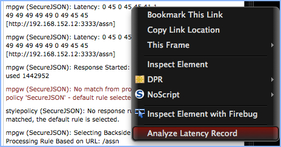
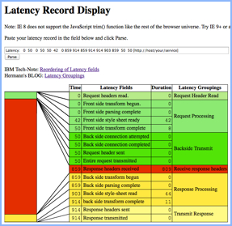
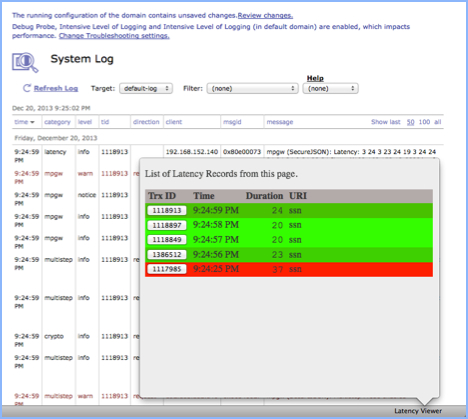

A Mozilla Firefox add-on for analyzing IBM DataPower latency log entries.
This Firefox Add-on is relevant to users of IBM DataPower appliances. It provides an analysis tool for latency records written to the DataPower Web UI log viewer. This add-on is basically an automation of the copy-n-paste task needed to use the Show Latency page.
A screen shot of the menu item is provided below.
A valid latency record will produce a graphic similar to the one below.
The latency panel will summarize your latency entries and color code them (from green to red) according to their relative maximum latency times. Just click on the **Latency** button to pop-up the panel.
Click the transaction ID of the record you wish to inject into the latency window (still a separate window). Disable the animation on the display page if you want to click through records quickly.
A list of all issues can be found on the [issues page](https://github.com/pglezen/dpShowLatency/issues).
The most common complaint is that the context menu item does not show on pop-up pages such as those launched from the probe window and the troubleshooting panel (see [GitHub issue](https://github.com/pglezen/dpShowLatency/issues/7) ).
The version number links will install specific versions of the add-on. The latest version is linked at the top of this page as Install Add-on.